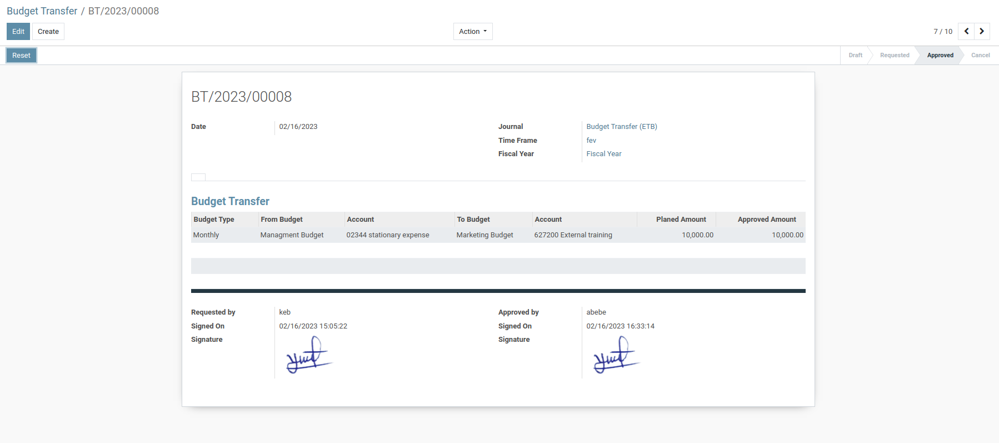

Budgeting as a company structure
It is important to ensure that the amount being transferred is accurate and that you have the necessary authorization to make the transfer. Additionally, the reason for transfer should be clearly defined to ensure that the transfer aligns with the organization's financial goals and objectives. Providing clear and concise explanations in the budget transfer request can help expedite the approval process and minimize errors. The amount being transferred The accounts involved (source and destination) The reason for the transfer The date the transfer should take place. The reason for a budget transfer can vary depending on the specific circumstances. Common reasons may include: To redistribute funding based on changes in priorities or expenses To cover unexpected or emergency expenses To address budget shortfalls in a particular department or program To allocate funds for a new initiative or project To consolidate or streamline budget management processes. It is important to clearly identify the reason for the transfer and to ensure that it complies with any relevant policies or guidelines.